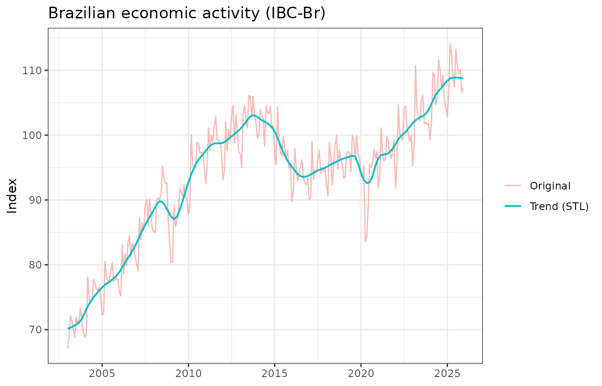
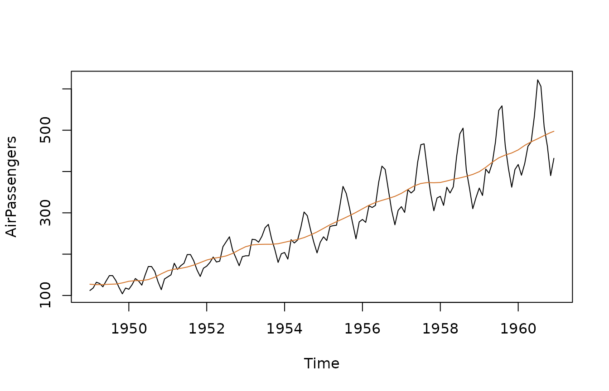

What is trendseries?
trendseries is a pipe-friendly interface to the trend,
seasonal, and cyclical structure of economic time series.
-
augment_trends()fits a smooth trend to a series. -
decompose_series()splits a series into trend, seasonal, and remainder components. -
deseason_series()removes the seasonal component, returning a seasonally adjusted series. -
detrend_series()removes the trend, returning the deviation from trend (a.k.a. the cycle, or output gap).
All four share the same pipe-friendly data.frame
interface, the same underlying trend methods, and the same unified
parameter system. Throughout this vignette (and the package
documentation generally) the terms data.frame and “data
frame” refer to any dataset in a rectangular format, i.e.,
data.frame/tibble/data.table.
Why trendseries?
Most filtering methods in R are designed for ts objects,
but analysis workflows use data frames with a date column. Converting
back and forth is tedious and error-prone. trendseries
works on data frames throughout, and keeps the ts-native
interface available for when you need it.
The package also sources smoothing functions across different packages and provides a unified interface when possible. The methods are the ones applied to economic series: econometric filters such as Hodrick-Prescott, Hamilton, and Spencer, alongside general-purpose smoothers such as STL and moving averages.
A simple example
Each function works by adding columns to the data frame, named after
the component and the method used (trend_stl,
seasadj_stl, detrend_hp, etc.). The examples
below use the IBC-Br series (ibcbr), the Brazilian Central
Bank’s monthly index of economic activity.
augment_trends() fits a smooth trend to a series and
returns it as a new column.
ibcbr_trend <- augment_trends(ibcbr, value_col = "index", methods = "stl")
head(ibcbr_trend)
#> # A tibble: 6 × 3
#> date index trend_stl
#> <date> <dbl> <dbl>
#> 1 2003-01-01 67.1 70.2
#> 2 2003-02-01 68.8 70.2
#> 3 2003-03-01 72.2 70.3
#> 4 2003-04-01 71.3 70.4
#> 5 2003-05-01 70.0 70.5
#> 6 2003-06-01 68.8 70.7
ggplot(ibcbr_trend, aes(date)) +
geom_line(aes(y = index, color = "Original"), linewidth = 0.5, alpha = 0.5) +
geom_line(aes(y = trend_stl, color = "Trend (STL)"), linewidth = 0.7) +
scale_color_manual(name = NULL, values = c("#1E3A5F", "#1E3A5F")) +
theme_minimal() +
labs(title = "Brazilian economic activity (IBC-Br)", x = NULL, y = "Index")
Every trend method reachable through augment_trends() is
also reachable through extract_trends(), which takes
ts/xts/zoo objects instead of
data frames and returns them, for users who prefer to stay in base R’s
time series ecosystem.
stl_trend <- extract_trends(AirPassengers, methods = "stl")
plot.ts(AirPassengers)
lines(stl_trend, col = "#C53030")
Where to go next
Each function has its own vignette with worked examples, parameter details, and guidance on choosing between methods.
| Vignette | Covers |
|---|---|
| Augmenting Trends |
augment_trends()/extract_trends():
grouping, multiple methods, finer control |
| Decomposing Series |
decompose_series()/deseason_series():
trend/seasonal/remainder splits |
| Detrending Series |
detrend_series(): cycles, output gaps, the
deseason-then-detrend workflow |
| Trend Extraction Methods | Catalogue of the trend methods, by family |
| Moving Averages | SMA, WMA, EWMA, Triangular, Median, Gaussian, Spencer, Henderson |
| Econometric Filters | HP, BK, CF, Hamilton, Beveridge-Nelson, UCM |
Acknowledgements
trendseries builds on existing packages.
-
mFilterfor economic filters. -
hpfilterfor Hodrick-Prescott filtering. -
tsboxfor time series conversions.
Getting Help
- Check the documentation:
?augment_trends,?decompose_series,?deseason_series,?detrend_series - View examples:
example(augment_trends) - Read other vignettes:
vignette(package = "trendseries") - Report bugs: GitHub issues